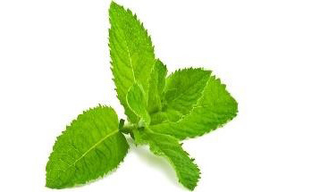
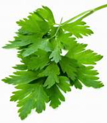

Food and Human Nutrition
Form Two
Exercise 1.2
Spices are prepared differently before adding them to the food. Explain the way you will prepare the following spices when making pilau.
(i) Cinnamon bark
(ii) Fresh ginger
(iii) Coriander seeds
(iv) Garlic
(v) Black pepper seeds
Herbs: These are plants or parts of plants like leaves, flowers, stalks or bulbs. They are added to dishes to improve their flavour, aroma and appearance. They make dishes more taste, for example, the use of rosemary in meat. They can also be used to garnish and marinate foods. They add rich taste to soups and stews. They are typically used while fresh or in dry form. They are added to food at different stages during cooking depending on the desired effect. Examples of commonly used herbs, their descriptions and dishes to which they can be added are shown in Table 1.2.
Table 1.2: Type of herb, description and dishes to which they can be added
Type of herb
Description
Dishes

Mint
Leaves
Roasted meat, some punch and salads

Parsley
Leaves
Soups, curries, stews and salads